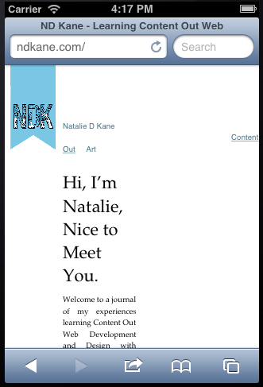
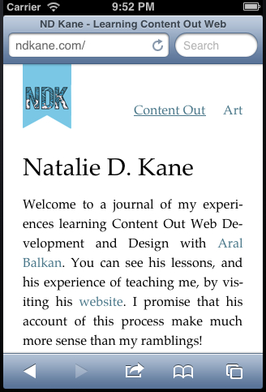

Last week we encountered a few problems with NDKane.com, largely that it looked terrible on mobile. This post will explain how I turned a wholly horrible site into a delightful little joy. However, first we had to sort out the navigation. As you can see here, on mobile it was very, very broken:
Therefore, we took away the 'margin-left' that set the positioning as ‘absolute’ in the nav element. ‘Absolute’ means that the position is relative to the ancestor element, in this case, the body. This means that as the viewport changes, it will always remain relative to the body, and won’t drift as it did before.
We then replaced the margins with 'top' and 'right' which allows you to place the image. As we wanted the Navigation to be above the body, we needed to break from it. In order to break from the body, we had to work in negative pixels, therefore setting the top attribute it at -62px, aligning it with the logo text baseline. The right attribute was set at 0, in order to align with the body.
As you can see, I have a shiny new logo bookmark! The font used is called SuastOrnad TFB, by Kaiser Zharkhan. Placing this was another exercise in breaking from the body. When I first placed this, I set it as a background image in the CSS, however this meant that I couldn’t set it as a home link, something that I wanted.
Therefore, I set the image within an h1 in the header, and then within the a element, allowing me to link back to my table of contents. In order to break from the body, I needed to set the position of my image. As it is within the header, I needed to set a rule for the img’s within them, which my logo was. As with the navigation, the position of the logo needed to be absolute to the body; I didn’t need to set the position to left, as this position is automatic. The top attribute is also set to negative pixels so that it is also above the body, aligned with the navigation.
header img
{
position: absolute;
width: 60px;
height: 113px;
top: -140px;
}
header h1
{
font-size: 16px;
display: inline;
margin-bottom: 0;
padding: 0;
line-height: 24px;
}As the header image is broken from the body, the body itself moved down, and therefore I had to adapt the margin-top of the body to accomodate for the navigation and header image. Therefore, as the header image moved down to align, I had to bring the body up by decreasing the margin-top of the body, while keeping to my grid.
I’m using Lea Verou’s syntax highlighter Prism to highlight my code with the pre (preformatted text) element, which is rather delightful and, in my opinion, makes it easier to read and understand.
As part of my homework, Aral has set me the task of redesigning websites that I have come across that I find particularly problematic. To find out more about my experiments you can visit my Redesign page, and email me your comments and suggestions (or just tell me that I’m wrong!)
As Aral has corrected me many times, the web is responsive, it’s just that many designers have become accustomed to making everything fixed in position, which is why a lot of sites arent’t. When learning how to fix my navigation, we came upon the larger problem of how my site looked in mobile, largely terrible. It looked all shiny and wonderful in a browser, however it broke apart as soon as it went mobile, or to a smaller browser size. Therefore I needed to learn about Breakpoints and Media Queries. I should tell you in advance, I’ve become rather good friends with Media Queries.
A breakpoint is the point at which the code breaks; Yes I know it sounds obvious, however it doesn’t break exactly, rather transform and adapt to its environment. The first step was to figure out where my code should break. Aral drew me this rather useful diagram as a way of working out where to set my breakpoint:

As you can see, We added up the margins set on the header image, the image itself and the body, as we wanted to calculate where the code should change.Therefore, we set the breakpoint, the minimum width required to display the content in this manner, at 768px, which happens to be one of the dimensions of an iPad (768 x 1024)!
@media all and (min-width: 768px)
{
}We then put all of the code required to make my site present as detailed above within the media query, and then adapted all of the code outside of it to adapt to viewports greater than 768px. For example, when my viewport exceeds 768px, my header image will go from a width of 60px to 96px, making it smaller. My visual hierachy for my headlines, and their line-heights will also change and adapt when the viewport exceeds 768px. This is so that it reads and presents well on a smaller viewport, such as a mobile, or smaller tablet.
This is designing mobile-first, designing for mobile and then larger viewports. After learning about Media Queries, and fixing the problems I had with the viewport, my site on mobile now looks like this:
I learnt about using escaping entities to fix formatting problems, particularly with justified text, such as ­ which tells the code that it's okay to break there. I also learnt about the importance of visualising my design, actually drawing it out rather than trying to mentally picture it, and getting myself confused. I was also introduced to Dash, which makes working a lot easier, and Foster Kitten Cam, which makes my day a lot better. I told you that I liked Cats.
Next week I’m learning about Root Ems. As I’ve mentioned, maths scares me, however I’ve been promised that I won’t need a Maths degree to know them.
Danish Phrase of the Week: Vi har mange fugle i vores have — We have many birds in our garden.
(Mine katte elsker fugle, de er meget uartig, men de lever inde for vore flad.)
Natalie
Copyright © 2013 Natalie D. Kane